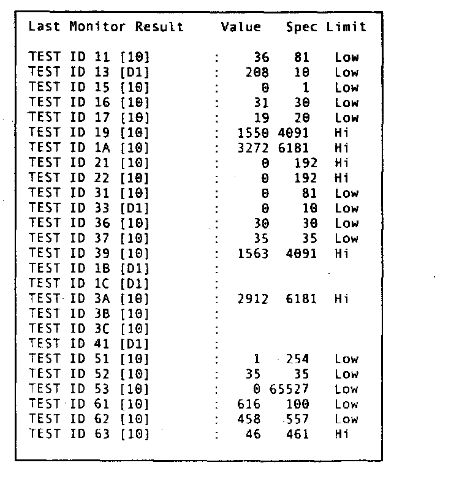
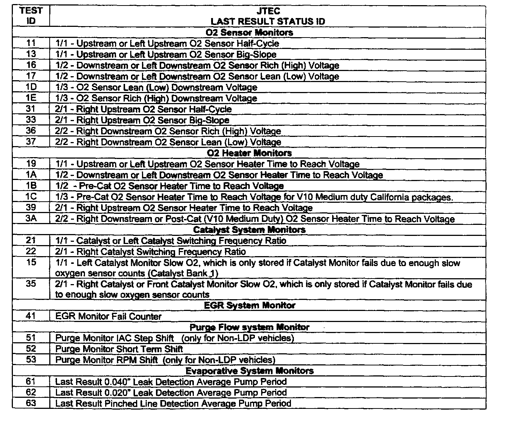
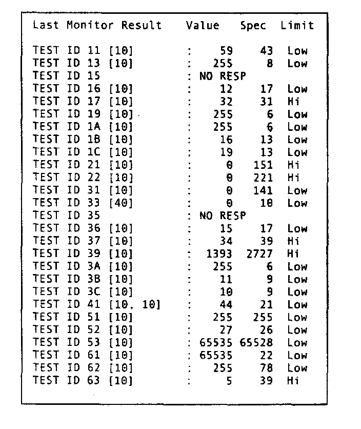
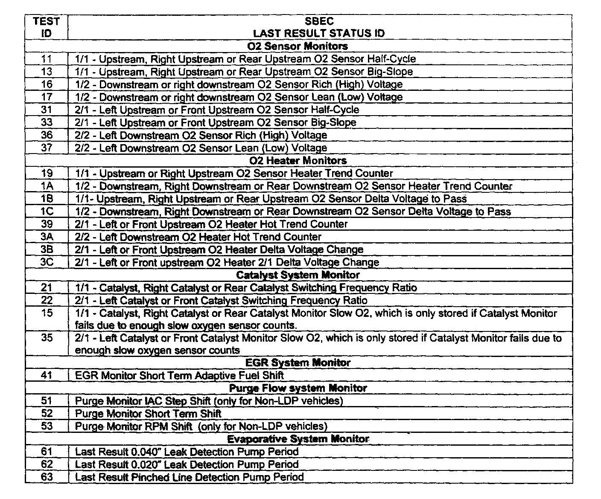

6. Last Monitor Results
MODE 6 - Request Test Results for "Non-Continuously" Monitored SystemsFunctional Description - The purpose of this test mode is to allow access to the results from on-board diagnostic monitoring tests of specific components/systems that are not continuously monitored (all except Fuel system and Misfire Monitors). The vehicle manufacturer is responsible to assign test IDs and component IDs for tests of different systems and components. The latest test results are to be retained, even over multiple ignition "off" cycles, until replaced by more recent test results. Test results are requested by test ID. Test results are reported only for supported combinations of test limit type and component ID, and are reported as positive (unsigned) values. Only one test limit is included in a response message, but that limit could be either a minimum or a maximum limit. If both a minimum and maximum test limit are to be reported, then two response messages will be transmitted, in any order. The DRB III can show two module Ids when two responses (Hi + Low limit) are returned to the Scan Tool. When seen, user can scroll to and highlight that reading. Pressing ENTER will then display both the High and Low values. This test mode is used as an alternative to replace the discretionary Mode 5 for reporting oxygen sensor monitor test results.
JTEC

Above is a MODE 6 Data Screen with all possible elements available for VIPER, JEEP, and Dodge Truck Products using the JTEC Powertrain Engine Controller.
NOTE6:
Keep in mind that no single vehicle will ever have all of these items stored at one time. Items are shown for example only. Some of the data may not be valid. MODE 6 Data is raw Decimal Data (not converted). Last Result data will not store if the PCM engine software is not calibrated for certain monitors or if monitors have not run and completed successfully.

Where...
TEST ID - XX is equal to the mode test identification number and [xx] is an identifier for the module being queried/responding.
Value - This column is the actual data stored from the last time the monitors ran. This data represents whether the monitor passed or failed when compared to the Threshold Spec for Failure column.
Spec - This column represents the Threshold Spec for Failure, which is either the Low Limit Spec or the High Limit Spec. User must refer to the Limit column to use this specification appropriately.
Limit - Either the appropriate "HI" or appropriate "Low" or "Both" limit Spec will be displayed.

SBEC
Below is a MODE 6 Data Screen with all possible elements available for Passenger Car and Minivan Products using the SBEC Powertrain Engine Controller.
NOTE7:
Keep in mind that no vehicle will ever have all of these items stored at one time. This is for example only and some of the data may not be valid.

Where...
TEST ID - XX is equal to the mode test identification number and [xx] is an identifier for the module being queried/responding.
Value - This column is the actual data stored from the last time the monitors ran. This data represents whether the monitor passed or failed when compared to the Threshold Spec for Failure column.
Spec - This column represents the Threshold Spec for Failure, which is either the Low Limit Spec or the High Limit Spec. User must refer to the Limit column to use this specification appropriately.
Limit - Either the appropriate "HI" or appropriate "Low", or "Both" limit Spec will be displayed.
NO RESP
- On an SBEC this indicates a "NO Response" which means that monitor has not run since a DTC erasure and/or a Battery Disconnect occurred.
JTEC will not respond with a "NO RESP" (No Response). It will respond with a valid spec and a Hi/Low limit but the data value will be 00.